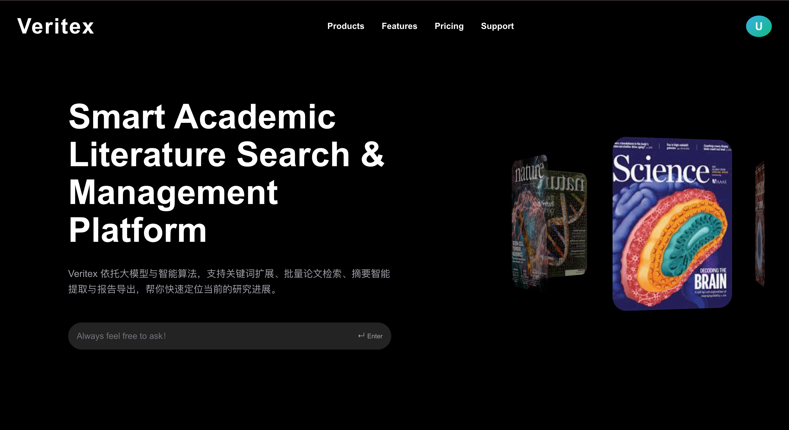
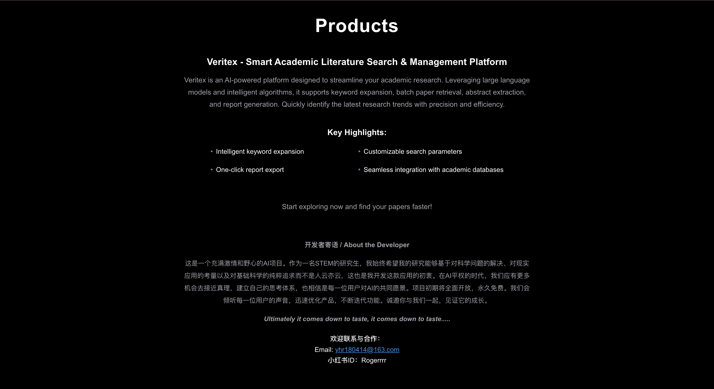
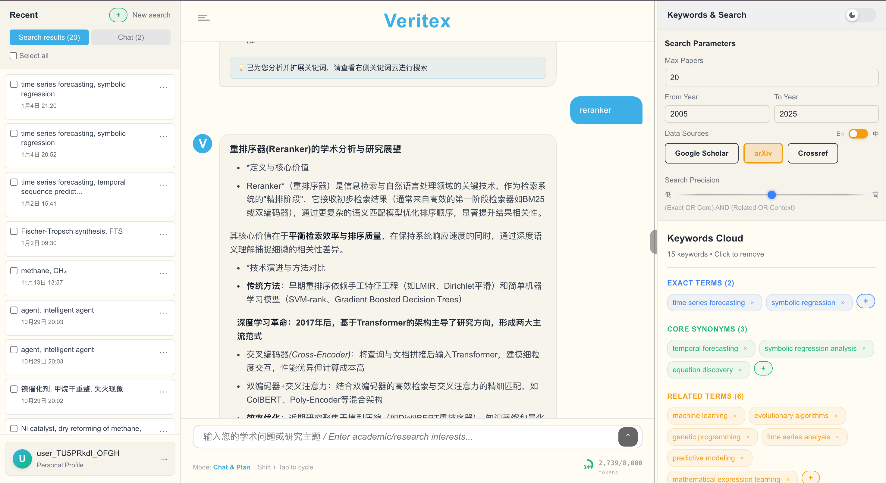
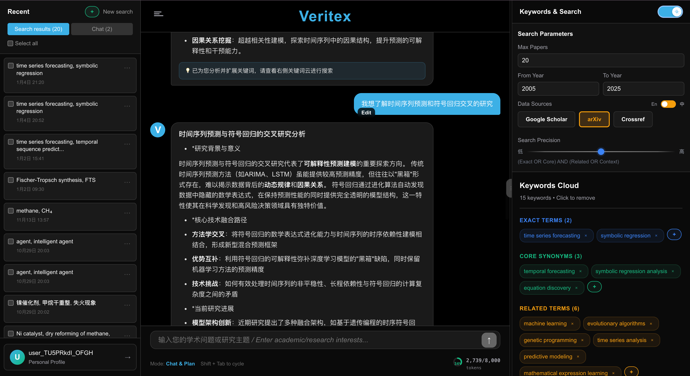
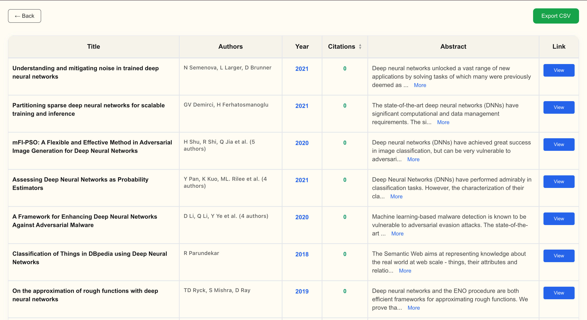

Veritex
传统关键词检索找到的往往不是你真正要的。Veritex 通过语义理解做文献检索——以 Chat & Search 为核心交互，LangGraph 在底层做意图识别、查询扩展与多源融合排序，让研究者用自然语言就能找到真正相关的文献。
产品截图





核心能力
- 意图识别 — 理解研究问题背后的真实意图，而非表面关键词
- 查询扩展 — 自动生成同义词、相关概念、领域术语，扩大检索覆盖面
- 多源融合 — 聚合多个学术数据库结果，统一格式与相关性评分
- 智能重排 — 基于语义相似度重新排序，最相关内容优先呈现
- Chat 模式 — 支持对检索结果追问、比较和深度分析
技术架构
基于 LangGraph 构建有状态的多步骤检索 Agent，每个节点单一职责：意图解析 → 查询改写 → 多源检索 → 结果融合 → 重排序 → 生成摘要。
检索层接入多个学术数据库 API，向量相似度与关键词混合检索（Hybrid Search）提升召回质量，最终用 LLM 对 Top-K 结果结构化整理，输出可直接引用的参考资料列表。